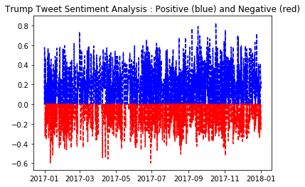

Twitter Sentiment Analysis
import json
from pprint import pprint
from nltk.sentiment.vader import SentimentIntensityAnalyzer
import numpy as np
import matplotlib.pyplot as plt
import pandas as pd
import urllib.request, json data = None
with urllib.request.urlopen("https://gitlab.com/rajacsp/datasets/raw/master/trump.json") as url:
data = json.loads(url.read().decode())data['tweets'][0]{'created_at': 'Mon Jan 01 13:37:52 +0000 2018',
'favorite_count': 54056,
'id_str': '947824196909961216',
'in_reply_to_user_id_str': None,
'is_retweet': False,
'retweet_count': 8656,
'source': 'Twitter for iPhone',
'text': 'Will be leaving Florida for Washington (D.C.) today at 4:00 P.M. Much work to be done, but it will be a great New Year!'}
tweet_index = []
tweet_date = []
positive_tweets = []
negative_tweets = []tw_counter = 0
def analyze_local(sentence, tw_date):
sid = SentimentIntensityAnalyzer()
#print(sentence)
global tw_counter
tw_counter += 1
ss = sid.polarity_scores(sentence)
#print(ss['pos'])
positive_tweets.append(ss['pos'])
negative_tweets.append(-ss['neg'])
tweet_index.append(tw_counter)
current_date = pd.to_datetime(tw_date).date()
#print(current_date)
tweet_date.append(current_date)
'''
for k in sorted(ss):
#print(ss)
print('{0}: {1}, '.format(k, ss[k]), end = '')
'''def plot_data():
# evenly sampled time at 200ms intervals
#myneglist = [ -x for x in negative_tweets]
# red dashes, blue squares and green triangles
plt.title('Trump Tweet Sentiment Analysis : Positive (blue) and Negative (red)')
plt.plot(tweet_date, positive_tweets, 'b--', tweet_date, negative_tweets, 'r--')
#plt.plot(tweet_date, negative_tweets, 'r--')
plt.show()def test_data():
#print(data['tweets'][0])
total_tweets = len(data['tweets'])
for x in range(total_tweets):
analyze_local(data['tweets'][x]['text'], data['tweets'][x]['created_at'])
plot_data() test_data()